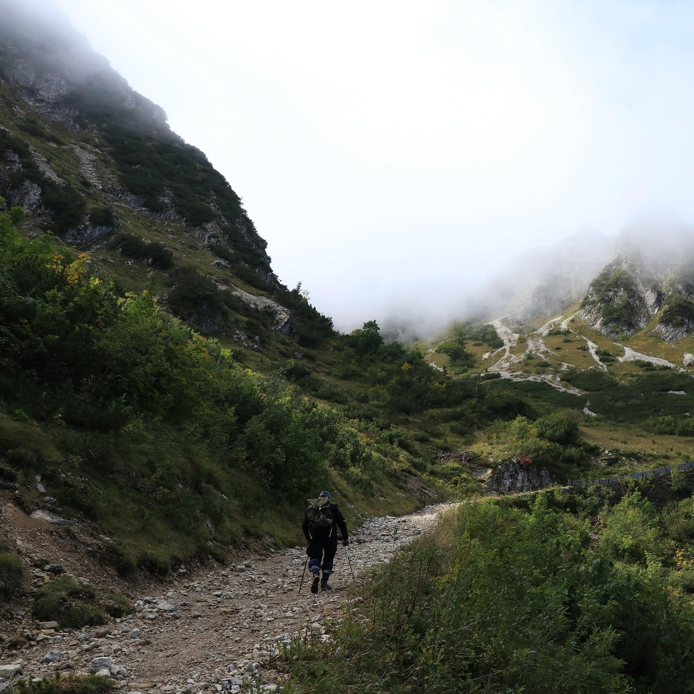

Ready to discover the wild beauty of Scotland’s mountains? Whether you’re an experienced hill walker or a beginner, our guided hill walking tours will take you on an unforgettable adventure through some of the country’s most stunning and rugged landscapes. With breathtaking views, diverse wildlife, and dramatic terrain, there’s no better way to connect with the natural heart of Scotland.
Breathtaking Scenery:
From towering peaks to serene lochs, Scotland offers some of the most awe-inspiring landscapes in the UK. As you trek through majestic highlands and glens, you’ll encounter panoramic vistas, ancient woodlands, and snow-dusted summits that showcase the country's raw and untamed beauty.
Expert Local Guides:
Our experienced guides are passionate about Scotland’s outdoors and will lead you safely through its varied terrain. With deep knowledge of local history, flora, and fauna, they’ll enrich your walk with fascinating insights and stories.
Trails for All Abilities:
Whether you're after a gentle scenic route or a challenging climb to a mountain summit, we offer hill walks to suit every fitness level. Choose a pace that suits you, and we’ll tailor the experience to ensure it’s both rewarding and enjoyable.
Immerse Yourself in Nature:
Scotland is a haven for wildlife. From red deer and golden eagles to elusive wildcats, you’ll have the chance to witness some of the country’s most remarkable creatures in their natural habitats. Hill walking here offers a rare opportunity to truly connect with nature.
A Truly Scottish Adventure:
Scotland’s mountains are steeped in history and mystery, with unique geology and diverse ecosystems. Every walk is more than a physical journey—it’s an immersive adventure that deepens your appreciation for the land and its stories.
• Expert Local Guides with extensive knowledge of the area
• Tailored Walking Routes for all levels of experience
• Safety and Navigation Briefing
• Transportation to Trailheads (if needed)
• Incredible Views and Wildlife Spotting Opportunities
Don’t miss the chance to experience one of the most memorable outdoor adventures Scotland has to offer. Whether you’re seeking a peaceful day in nature or an epic summit challenge, we’ve got the perfect hill walking experience waiting for you.
Booking Prices:
• Half-Day Guided Walk: from £45 per person
• Full-Day Guided Walk: from £75 per person
• Private Group (up to 6 people): from £250 per day
• Custom Multi-Day Packages: Price on request